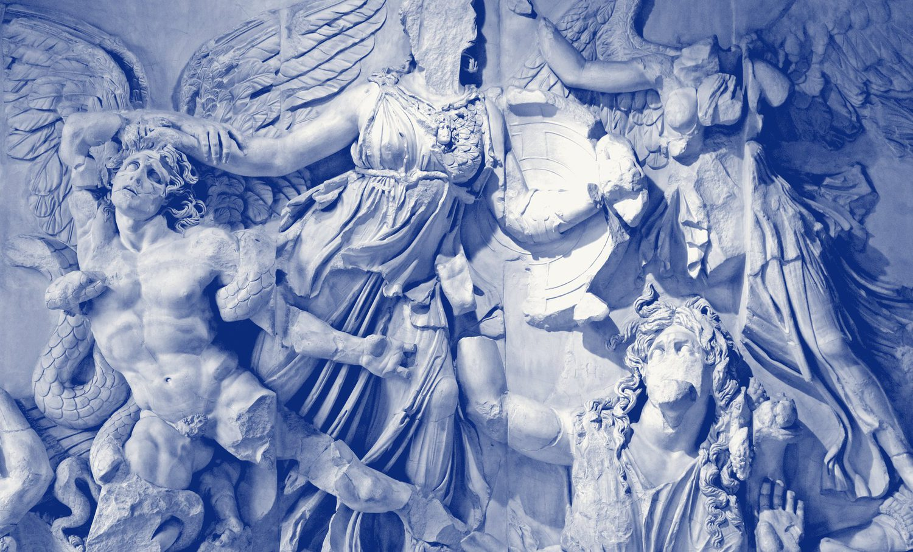
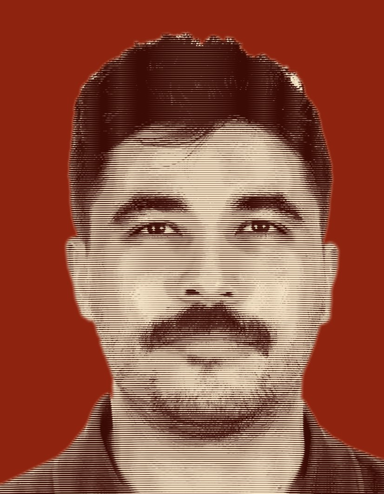
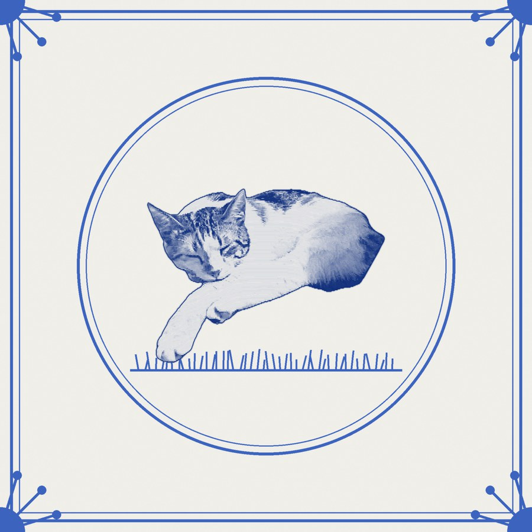
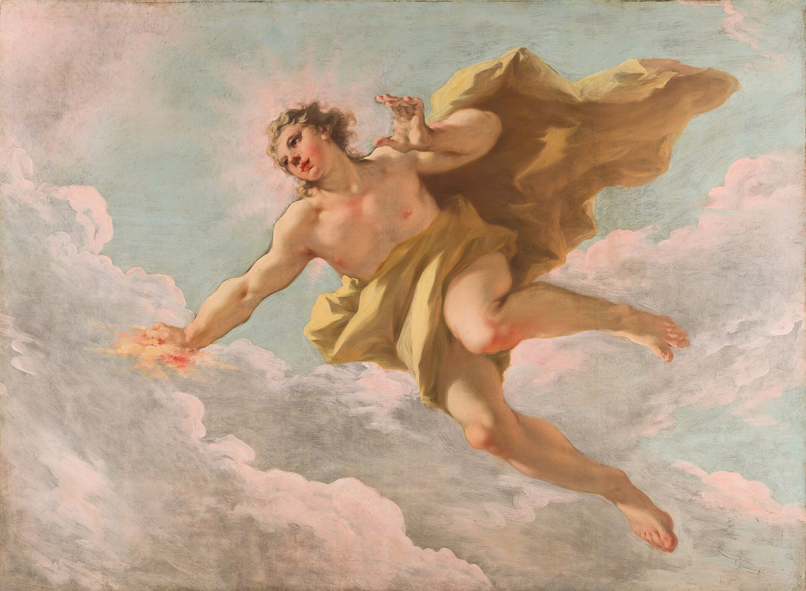
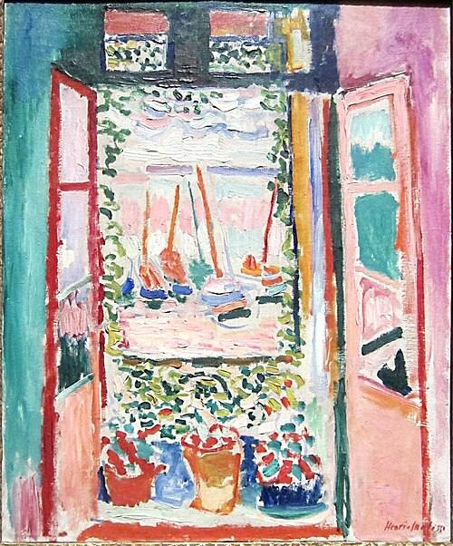
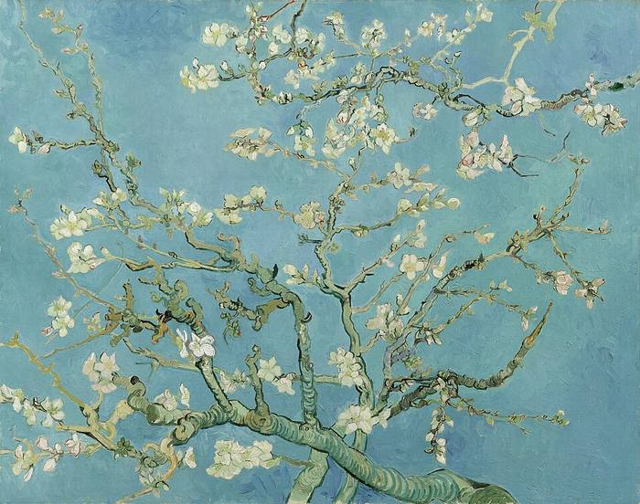
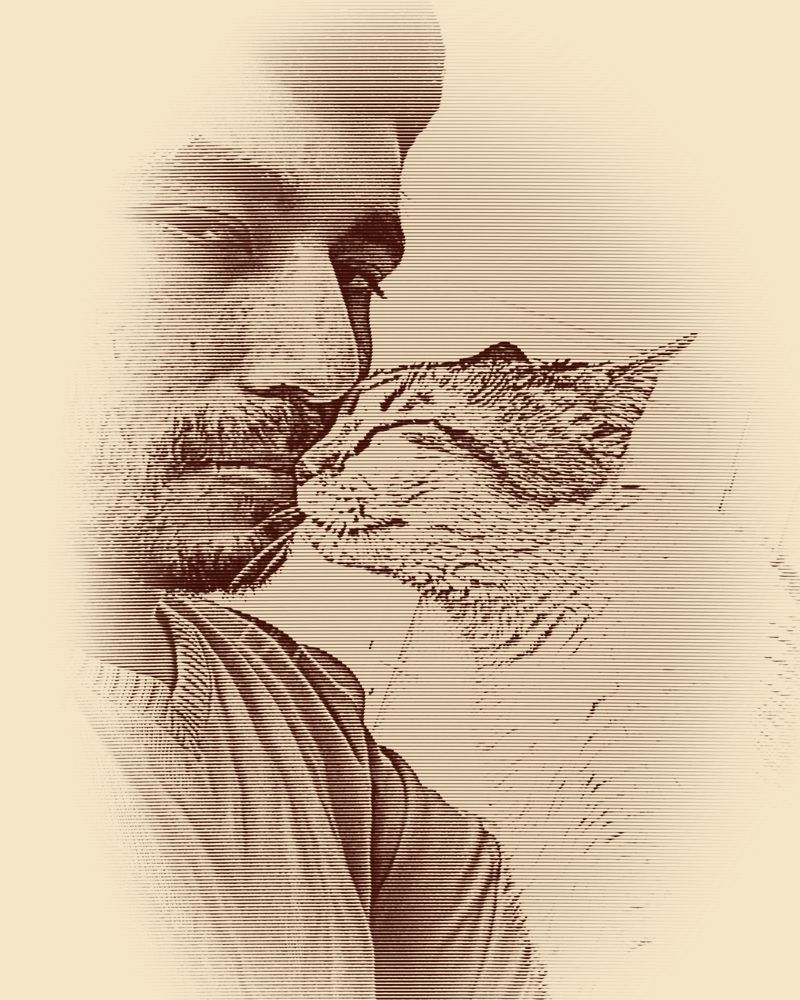

iOS Engineer → AI / ML · MSc @ RUB Bochum
Muhammed
Çağrı Demir
iOS engineer with 6+ years delivering banking and e-commerce apps for 250K+ users — now in Bochum for an M.Sc. in Applied Computer Science at Ruhr-Universität Bochum, on the way to becoming an AI / ML engineer. Energy prediction pipelines, medical imaging models, on-device inference.

About
Who I am


Until July 2026 I was an iOS Engineer at OBSS & BKT — building the banking apps that hundreds of thousands of customers in Kosovo and Albania rely on every day. I am now in Bochum for my Master's in Applied Computer Science.
"Six years in, I care about code that ships, teams that communicate, and problems worth solving."
Over six-plus years I've shipped production apps for global brands — Nike, Under Armour, Bloomingdale's — and enterprise banking clients, leading architecture decisions and CI/CD pipelines in multinational teams spanning Europe, the UK, Dubai, and Albania.
Alongside iOS, my work has naturally taken me toward machine learning. At carbon.ninja I built automated ETL pipelines for energy and weather data and trained predictive models for electricity consumption forecasting. I've explored deep learning — a pneumonia detection model from chest X-rays using EfficientNet-B0 with Grad-CAM — and brought on-device inference into iOS via Core ML. Most recently I built Sana — an AI health & nutrition app (now on the App Store) that integrates the Claude API to bring large-language-model reasoning directly into a SwiftUI product.
My degree has been officially evaluated by the KMK Zentralstelle as equivalent to a German Bachelor's. I hold a telc Deutsch C1 Hochschule certificate (March 2026) and IELTS Academic 6.5 (April 2026).
Now
Skills
Technical Expertise
Core skills are highlighted in blue — tools I use every day in production. Everything else is actively applied in professional or personal projects.
iOS / Swift
Core
Frameworks & Tools
AI / ML / Data
Core
Libraries & Tools
Engineering
Core
Tools & Practices
Currently Exploring
Projects
Work & Projects
Production apps shipped for global brands and financial institutions, plus personal machine learning projects.
AI · iOS · Health
Sana — AI Health & Nutrition
SwiftUI health app integrating the Claude AI API (Anthropic) for personalised meal recommendations and calorie tracking. Real-time inference on HealthKit data, allergy and diet personalisation, and full 6-language localisation (TR, DE, EN, ES, PT, FR).
App Store →Banking · iOS · Kosovo · Albania
BKT Smart & BKT Kosova Mobile
Core developer of two banking apps serving 250K+ users. Built National ID onboarding, account management, fund transfers, cardless withdrawals, QR payments, and RIA Money Transfer. Secured with SSL pinning, Wultra Shield, Keychain, and JWT.
App Store →Sports · Global · Middle East
Nike iOS App
Built foundational architecture and core features for Nike's regional iOS app: splash screen, fluid animations, Arabic-English RTL localisation, user registration flows, and main navigation. Analytics via SnowplowTracker and Firebase.
App Store →E-Commerce · Middle East
Under Armour ME
Key iOS developer for product detail pages, address management, and multi-step checkout across UAE, Saudi Arabia, and Kuwait. Full Arabic-English RTL support. Implemented Click & Collect with Google Maps, MapKit, and CoreLocation.
App Store →Luxury E-Commerce · iOS
Bloomingdale's
Contributed to the Bloomingdale's iOS app across UAE, Saudi Arabia, and Kuwait. Developed product browse, wishlist and bag management, and Apple Pay checkout. Implemented Face ID / Touch ID biometric auth with pixel-perfect luxury UI.
App Store →Sneakers / Fashion · iOS
Dropkick
Built the Dropkick sneaker and streetwear app from scratch using MVVM-R: product listings, size selectors, time-limited and raffle purchase flows, push notifications for exclusive drops, and full App Store submission pipeline.
App Store →Luxury Retail · iOS · UAE
THAT Concept Store
Developed core shopping flows and modular UI for this UAE luxury retail app. Secure payment flows with Keychain, optimised background processing with GCD, networking via Alamofire and URLSession.
App Store →Fashion · iOS · Turkey / UAE
Nice Stores
Built a full MVC-R shopping app from scratch for the Nice Stores fashion brand — implementing core shopping flows, modular reusable components, Firebase and Salesforce analytics, and App Store submission pipeline. Managed all networking via Alamofire/URLSession and optimised UI performance using GCD.
App Store →AI · Python & R · Energy
carbon.ninja — Energy AI Platform
Built automated ML data pipelines for large-scale energy and weather data ingestion. Developed and validated regression and time-series models for electricity consumption forecasting and demand-peak prevention.
carbon.ninja →Deep Learning · Medical AI
Chest X-Ray AI — Pneumonia Detection
End-to-end deep learning pipeline for pneumonia detection from chest X-rays. EfficientNet-B0 with transfer learning on the Kaggle Chest X-Ray dataset (5,800+ images), with two-phase fine-tuning for class imbalance — 87.7% test accuracy, ROC-AUC 0.96, and Grad-CAM heatmaps explaining each prediction.
View on GitHub →ML · Job Market · Python
ML Job Analyzer
Random Forest classifier predicting the seniority level (Entry / Mid-Senior / Director) of LinkedIn job postings from salary, work type, remote option, and title keywords — a 123K-posting Kaggle dataset filtered to 28K complete records, 72% accuracy, served through a Streamlit predictor.
View on GitHub →NLP · SHAP · Job Market
Tech Job Market Intelligence
NLP on job titles (TF-IDF and LDA topic modelling) across 9K+ data-job postings, with salary regression comparing Ridge, Random Forest, and Gradient Boosting, explained using SHAP. Role segmentation with K-Means and PCA, delivered as a three-tab Streamlit app for market exploration and salary prediction.
View on GitHub →NLP · Voice · Python
Basic Voice Assistant
Voice-controlled assistant combining speech recognition, intent parsing, and TTS synthesis — an exploration of applied NLP and human-computer interaction in a constrained, real-time environment.
View on GitHub →Robotics · ROS · Python
ConcentricCircle
A mobile robotics project built with ROS and Python — implementing concentric circular motion patterns for autonomous robot navigation. Developed for the Mobile Robotics Programming course at Yaşar University.
View on GitHub →Experience
Work History
6+ years across fintech, global retail, and energy tech — from İzmir to Istanbul, with teams spanning Europe, the UK, the Middle East, and the Balkans.
iOS Engineer
OBSS & BKT · Istanbul / Tirana, Albania (Remote)
Built and maintained iOS banking apps for 250K+ users using Clean Architecture and SwiftUI. Delivered 99%+ bug-free releases through unit and UI testing. Integrated QR payments, RIA Money Transfer, JWT authentication, Keychain credential storage, and SSL pinning for end-to-end security. Enhanced UX with WidgetKit home screen widgets and Lottie animation sequences. Managed CI/CD pipelines with Bitrise in an Agile environment across Istanbul, Albania, and remote Europe.
iOS Developer
EPAM Systems / Emakina · İzmir
Delivered production iOS apps for Nike, Under Armour ME, Bloomingdale's, and Dropkick — serving users across the UAE, Saudi Arabia, and Kuwait. Built pixel-perfect UIs with SnapKit and Core Animation. Integrated Apple Pay, Face ID/Touch ID, and Click & Collect location flows. Led Objective-C → Swift migration for legacy modules. Managed CircleCI pipelines with SonarQube static analysis.
Software Developer & Junior Data Scientist
Onur Enerji · İzmir (carbon.ninja platform)
Built automated ETL data pipelines in Python and Apache Airflow for the carbon.ninja energy intelligence platform. Developed and validated supervised ML models — regression and ensemble approaches — for electricity consumption forecasting and demand-peak prevention. Performed feature engineering, hyperparameter tuning, cross-validation, and produced data visualisations in R and Python.
Software Engineer Intern
Onur Enerji · İzmir
Designed and implemented automated data ingestion pipelines using Apache NiFi, Java, and regex-based text processing to collect and normalise electricity market data from the EPIAS REST API. Structured raw market data into relational schemas in MySQL for downstream analysis and reporting.
Education & Credentials
Academic Background
Enrolled · Master's
M.Sc. Applied Computer Science — Ruhr-Universität Bochum
Enrolled in the Angewandte Informatik (Applied Computer Science) Master's programme at Ruhr-Universität Bochum, Germany — Winter Semester 2026/27, expected graduation 09/2028. The next step in moving from iOS engineering into AI / ML.
Official German Recognition
KMK Zeugnisbewertung — Degree equivalent to German Bachelor's
Issued by the Kultusministerkonferenz (KMK) Zentralstelle für ausländisches Bildungswesen, Bonn. Reg.-Nr.: LN2025/77597-1 · August 2025. Officially confirmed as equivalent to a German Hochschulabschluss auf Bachelor-Ebene.

M.Sc. Applied Computer Science
Ruhr-Universität Bochum · Bochum, Germany Enrolled
Focus on machine learning. Current coursework: Deep Learning, NLP with Deep Learning, Fundamentals of GPU Programming, Numerical Optimization, and Unsupervised Methods. Expected graduation 09/2028.
BSc Management of Information Systems
Anadolu University · Eskişehir, Turkey · GPA 2.72
Part-time open education degree pursued alongside a full professional career. Coursework in information systems, business analytics, database programming, algorithms, and data mining — providing a complementary perspective on the business and systems context of software and AI applications.
BSc Software Engineering
Yaşar University · İzmir, Turkey · GPA 2.7 / 4.0
Full-time software engineering programme, all instruction 100% in English. Covered algorithms, data structures, software architecture, operating systems, databases, NLP, AI, mobile development, and mobile robotics. Graduated with A / A− on both Senior Design Projects. KMK-evaluated as equivalent to a German Bachelor's degree (August 2025).
Languages
Certificates
References
Recommendations
Reference letters from academic supervisors at Yaşar University and from my first industry employer. All available upon request.
Prof. Dr. Mehmet S. Ünlütürk
Software Engineering Dept. · PhD from IIT Chicago
"He demonstrates a strong ability to rapidly grasp and apply practical knowledge in AI, Python, operating systems, and software engineering. His capacity to integrate them effectively is truly impressive."
Assoc. Prof. Dr. Korhan Karabulut
Head of Software Engineering Dept.
"He has the mental capacity to perform well above average and the dedication and personality to accomplish a wide range of goals. I recommend him without reservation."
Asst. Prof. Dr. Kazım Erdoğdu
Department of Software Engineering
"Strong analytical and algorithmic thinking, capable of solving complex computer science problems — quick thinking and sound approaches to problem-solving, coding, and logical reasoning."
Onur Günduru
CEO, Onur Enerji & carbon.ninja
"He excelled in data visualisation, transforming raw, complex datasets into clear and actionable insights. His solid foundation in data engineering will make him a valuable asset to any organisation."
Özge Narin Dağ
AI GTM Lead, Google · Former Manager at OBSS
"Çağrı is analytical, intellectually curious, and takes full ownership of everything he works on. He asks the right questions, thinks carefully about why — not just how — and does not settle for surface-level solutions."
F. Bedirhan Yıldız
Mobile Tech Lead, EPAM Systems
"Beyond his technical skills, Çağrı possesses a disciplined and analytical mindset. He approaches every project with genuine curiosity and a strong commitment to excellence."
Beyond Code
Outside of Work
Music
I play the ukulele — something about the warmth of it suits evenings well. On the other end of the spectrum, I'm deeply drawn to electronic music and want to learn to DJ properly; the craft of mixing, reading a room, building energy over time fascinates me as much as any engineering problem.
Travel
I've explored quite a bit: USA, UK, Scotland, Egypt, Germany, Albania, Belgium, Georgia, Czech Republic, France, and Netherlands. What draws me most are places with deep history — old quarters, archaeology, standing somewhere alive for centuries.
Art
Museums and galleries are one of my favourite ways to spend time in a new city. I'm especially drawn to colour and light — three works I keep returning to mentally, each encountered in a different country.
Volunteering
During university, I volunteered regularly at a local community kitchen, helping prepare and serve meals for people in need. Genuinely grounding — a reminder that meaningful work often has nothing to do with a screen.

Henri Matisse · 1905
Open Window, Collioure
National Gallery of Art

Vincent van Gogh · 1890
Almond Blossom
Van Gogh Museum, Amsterdam
Johannes Vermeer · c. 1665
Girl with a Pearl Earring
Mauritshuis, The Hague
Contact
Get in Touch
Now based in Bochum, Germany for my Master's — open to Werkstudent roles, AI/ML opportunities, and collaborations. Whether you're a fellow student, a researcher, or an employer, I'd be glad to connect. Feel free to reach out anytime.
